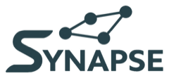

Цели, а не только задачи
У цели есть этапы, у этапов — свои задачи. Прогресс считается сам, и видно, какая задача сегодня реально двигает большое.

Synapse AI TelegramЦель превращается в этапы, этапы — в задачи на сегодня. Видно не только сегодняшний день, но и куда он ведёт.
Русский и ещё 9 языков. Планирование работает без интернета.

У цели есть этапы, у этапов — свои задачи. Прогресс считается сам, и видно, какая задача сегодня реально двигает большое.
Скажи словами: «перенеси созвон на пятницу», «разбери мой день», «сделай из этого цель». Syn меняет план сам и показывает, что именно сделал.
Все цели, этапы и связанные задачи на одном полотне. Видно, где движение есть, а где месяц ничего не происходило.
Сегодня, Завтра, Послезавтра, На неделе и Потом. Всё видно сразу, без переключений.
Мягкая дата, жёсткий срок «до 18:00» или окно «с 10:00 до 11:30» — задача сама знает, когда её можно закрыть.
Каждый день, по дням недели, по числам месяца. Пропустил — приложение честно это покажет, а не притворится.
Продиктуй задачу или целый разбор дня. Знаки препинания расставятся сами.
Папки с заметками и списки покупок рядом с планом, а не в отдельном приложении.
Таймер фокуса и звуки для передышки — дождь, лес, костёр. Работают офлайн.
Сколько наметил, сколько закрыл, что просрочено. По дню, неделе или за всё время.
Восемь палитр, светлая и тёмная тема, размер шрифта и плотность списка — под себя.


В приложении нет рекламных SDK и рекламного идентификатора. Мы не следим за вами между приложениями и не продаём данные.
Задачи, цели и заметки хранятся у вас. Наружу уходит только то, что вы сами отправляете Syn.
Полная резервная копия одним файлом и очистка памяти ассистента — в настройках, без писем в поддержку.
Подробности — в политике конфиденциальности.
Приложение открывается сразу, без регистрации. Внутри уже есть примеры, чтобы было с чего начать.